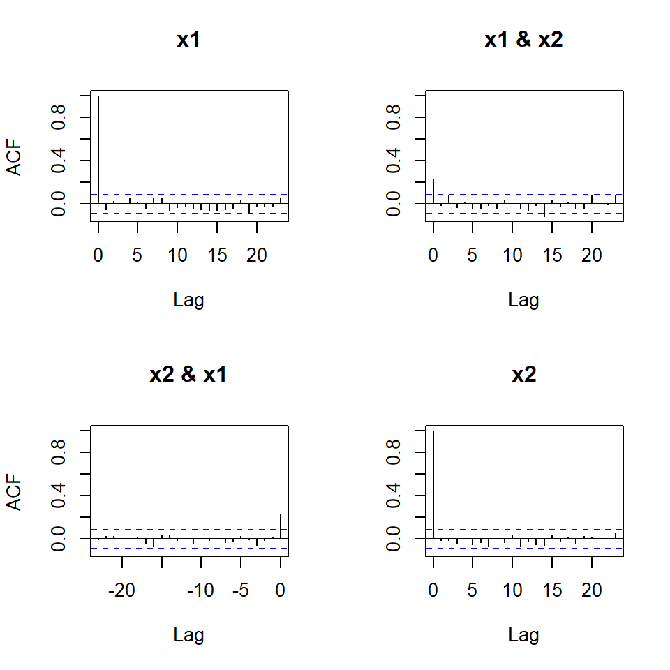
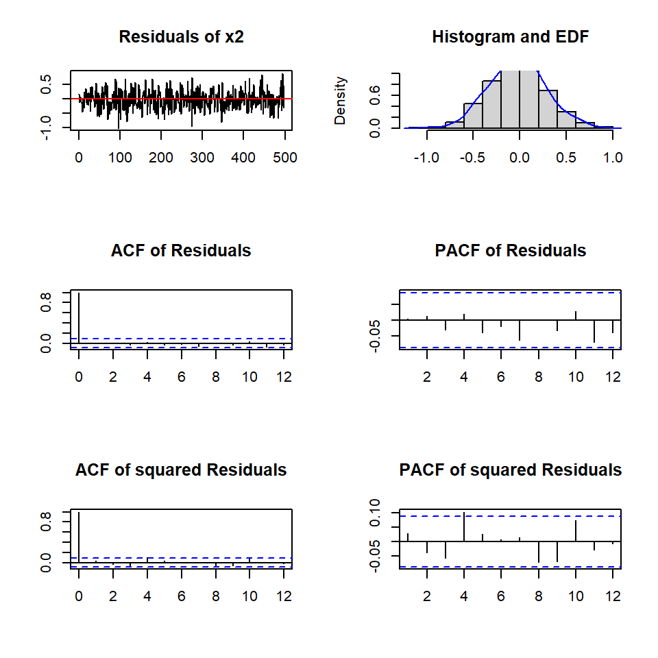

![]()
library(ggplot2)
library(MTS)
library(vars)Tema 2: Análisis multivariado de series temporales(2)
1 librerías
2 Ejemplo de VAR(2) simulado
set.seed(1000)
Phi_1 <- matrix(c(0.5, 0.1,
0.2, 0.4), nrow = 2, byrow = TRUE)
Phi_2 <- matrix(c(0.2, -0.1,
0.1, 0.3), nrow = 2, byrow = TRUE)
Sigma <- matrix(c(0.1, 0.02,
0.02, 0.1), nrow = 2)
simVAR2 <- VARMAsim(nobs = 500, arlags = c(1, 2), phi = cbind(Phi_1, Phi_2), sigma = Sigma)
simVAR2_datos <- ts(simVAR2$series, names = c("x1", "x2"))
simVAR2_errores <- ts(simVAR2$noises, names = c("x1", "x2"))plot.ts(simVAR2_datos, main = "", xlab = "t")plot.ts(simVAR2_errores, main = "", xlab = "t")stats::acf(simVAR2_datos)stats::acf(simVAR2_errores)
2.1 Determinar el lag de acuerdo a los criterios
infocrit <- vars::VARselect(simVAR2_datos, lag.max = 5,
type = "none")
infocrit$selection
AIC(n) HQ(n) SC(n) FPE(n)
2 2 2 2
$criteria
1 2 3 4 5
AIC(n) -4.49591313 -4.655845657 -4.654538769 -4.646930470 -4.640727992
HQ(n) -4.48257521 -4.629169805 -4.614524992 -4.593578768 -4.574038365
SC(n) -4.46193691 -4.587893208 -4.552610096 -4.511025573 -4.470846871
FPE(n) 0.01115449 0.009505878 0.009518325 0.009591051 0.0096507762.2 Estimar el modelo
varsimest <- vars::VAR(simVAR2_datos, p = 2, type = "none",
season = NULL, exogen = NULL)
summary(varsimest)
VAR Estimation Results:
=========================
Endogenous variables: x1, x2
Deterministic variables: none
Sample size: 498
Log Likelihood: -243.242
Roots of the characteristic polynomial:
0.7897 0.7897 0.3906 0.3329
Call:
vars::VAR(y = simVAR2_datos, p = 2, type = "none", exogen = NULL)
Estimation results for equation x1:
===================================
x1 = x1.l1 + x2.l1 + x1.l2 + x2.l2
Estimate Std. Error t value Pr(>|t|)
x1.l1 0.47772 0.04479 10.666 < 2e-16 ***
x2.l1 0.05368 0.04540 1.183 0.2375
x1.l2 0.26289 0.04725 5.564 4.34e-08 ***
x2.l2 -0.07826 0.04318 -1.812 0.0705 .
---
Signif. codes: 0 '***' 0.001 '**' 0.01 '*' 0.05 '.' 0.1 ' ' 1
Residual standard error: 0.3206 on 494 degrees of freedom
Multiple R-Squared: 0.4501, Adjusted R-squared: 0.4457
F-statistic: 101.1 on 4 and 494 DF, p-value: < 2.2e-16
Estimation results for equation x2:
===================================
x2 = x1.l1 + x2.l1 + x1.l2 + x2.l2
Estimate Std. Error t value Pr(>|t|)
x1.l1 0.22542 0.04312 5.228 2.54e-07 ***
x2.l1 0.37012 0.04370 8.469 2.86e-16 ***
x1.l2 0.07872 0.04549 1.730 0.0842 .
x2.l2 0.28505 0.04157 6.857 2.10e-11 ***
---
Signif. codes: 0 '***' 0.001 '**' 0.01 '*' 0.05 '.' 0.1 ' ' 1
Residual standard error: 0.3086 on 494 degrees of freedom
Multiple R-Squared: 0.5875, Adjusted R-squared: 0.5841
F-statistic: 175.9 on 4 and 494 DF, p-value: < 2.2e-16
Covariance matrix of residuals:
x1 x2
x1 0.10272 0.02334
x2 0.02334 0.09451
Correlation matrix of residuals:
x1 x2
x1 1.0000 0.2369
x2 0.2369 1.00002.3 Verificar que los eigenvalues tengan módulo menor a 1 (estacionariedad)
roots <- vars::roots(varsimest)
roots[1] 0.7897118 0.7897118 0.3906478 0.33287382.4 Diagnósticos
2.4.1 Prueba de Portmanteau
var2c.serial <- serial.test(varsimest, lags.pt = 16,
type = "PT.asymptotic")
var2c.serial
Portmanteau Test (asymptotic)
data: Residuals of VAR object varsimest
Chi-squared = 48.97, df = 56, p-value = 0.73582.4.2 Prueba de heteroscedasticidad
var2c.arch <- arch.test(varsimest, lags.multi = 5,
multivariate.only = TRUE)
var2c.arch
ARCH (multivariate)
data: Residuals of VAR object varsimest
Chi-squared = 70.045, df = 45, p-value = 0.0098162.4.3 Prueba de normalidad
var2c.norm <- normality.test(varsimest,
multivariate.only = TRUE)
var2c.norm$JB
JB-Test (multivariate)
data: Residuals of VAR object varsimest
Chi-squared = 1.3577, df = 4, p-value = 0.8515
$Skewness
Skewness only (multivariate)
data: Residuals of VAR object varsimest
Chi-squared = 0.90295, df = 2, p-value = 0.6367
$Kurtosis
Kurtosis only (multivariate)
data: Residuals of VAR object varsimest
Chi-squared = 0.45472, df = 2, p-value = 0.79662.4.4 Plot de los objetos “varcheck”
plot(var2c.serial, names = "x1")plot(var2c.serial, names = "x2")
2.5 Granger
var.causal.x1<- causality(varsimest,cause="x2")
var.causal.x1$Granger
Granger causality H0: x2 do not Granger-cause x1
data: VAR object varsimest
F-Test = 1.6496, df1 = 2, df2 = 988, p-value = 0.1927
$Instant
H0: No instantaneous causality between: x2 and x1
data: VAR object varsimest
Chi-squared = 25.836, df = 1, p-value = 3.716e-07var.causal.x2<- causality(varsimest,cause="x1")
var.causal.x2$Granger
Granger causality H0: x1 do not Granger-cause x2
data: VAR object varsimest
F-Test = 27.259, df1 = 2, df2 = 988, p-value = 2.996e-12
$Instant
H0: No instantaneous causality between: x1 and x2
data: VAR object varsimest
Chi-squared = 25.836, df = 1, p-value = 3.716e-072.6 Pronóstico
## Forecasting objects of class varest
predictions <- predict(varsimest, n.ahead = 25,
ci = 0.95)class(predictions)[1] "varprd"args(vars:::plot.varprd)function (x, plot.type = c("multiple", "single"), names = NULL,
main = NULL, col = NULL, lty = NULL, lwd = NULL, ylim = NULL,
ylab = NULL, xlab = NULL, nc, mar = par("mar"), oma = par("oma"),
...)
NULLplot(predictions, names = "x1")fanchart(predictions,names="x1")fanchart(predictions, names = "x2")plot(predictions, names = "x2")2.7 Función de impulso-respuesta
irf.x1 <- irf(varsimest, impulse = "x1",
response = "x2", n.ahead = 10)
plot(irf.x1)irf.x2 <- irf(varsimest, impulse = "x2",
response = "x1", n.ahead = 10)
plot(irf.x2)